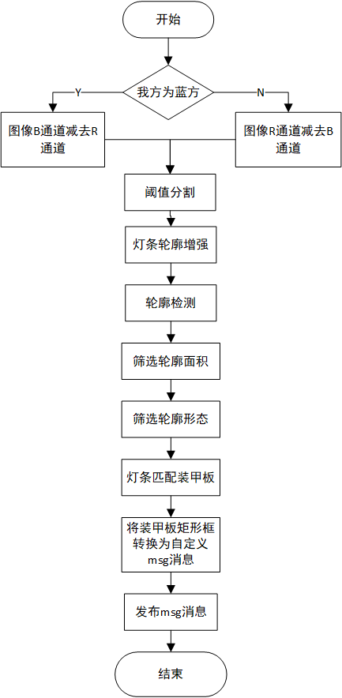

RMUC2022装甲板识别器
- Authors
HarryWen
- Contact
- Date
2022/09/8
- Copyright
This document has been placed in the public domain.
概述
在RMU竞赛中， 准确识别装甲板是后续进行预测和反小陀螺算法的基础。该文档将阐述如何通过传统视觉在较为复杂的灯光环境下获取装甲板灯条轮廓，以及如何对灯条进行匹配。
Note
能量机关识别器的相关代码位于 bubble_detector/bubble_visual 模块下
流程
图像预处理
不同于能量机关的预处理，装甲板所处的环境会更加的复杂。需要考虑环境内不同物体的反光，和灯条本身存在的中间亮四周暗的问题。
图像二值化处理：分离图像的BGR通道，将其中的B和R两通道相减。对相减的结果进行阈值分割，得到需要击打颜色的二值化图像。
2. 灯条轮廓增强：首先对二值化图像进行腐蚀，去除反光。然后进行多次图像形态学上的闭运算，消除不完整轮廓。 最后膨胀使轮廓恢复原始大小，以防轮廓大小变化影响 PnP解算 。
功能实现
均使用OpenCV内的函数实现
核心代码实现
获取指定颜色的二值化图像
cv::Mat GrayFilter(cv::Mat &image, bool mode, int grayThres)
{
cv::Mat grayImg;
cv::Mat channels[3];
cv::split(image, channels);
if (mode)
{
grayImg = channels[2] - channels[0];
}
else
{
grayImg = channels[0] - channels[2];
}
cv::threshold(grayImg, grayImg, grayThres, 255, cv::THRESH_BINARY);
return grayImg;
}
此处代码于能量机关的图像二值化代码相同。
灯条轮廓增强
inline cv::Mat enhanceContour(cv::Mat &image, int morphologyexIter)
{
int niters = 2;
cv::Mat copied_image;
cv::Mat kernel = cv::getStructuringElement(2, cv::Size(3, 3), cv::Point(-1, -1)); // 0为MORPH_RECT
cv::erode(image, copied_image, kernel, cv::Point(-1, -1), niters);
cv::morphologyEx(image, copied_image, 3, kernel, cv::Point(-1, -1), morphologyexIter); // 闭操作
cv::dilate(copied_image,copied_image,kernel,cv::Point(-1,-1),niters);
return copied_image;
}
灯条识别
面积法：计算轮廓面积，筛选出面积大于阈值的轮廓。
形态筛选法：计算轮廓最小外接旋转矩形，根据旋转角度和轮廓长宽比来筛选出竖直矩形。（避免机器人血条的影响）
功能实现
未在函数前添加cv名称空间的均为 bubble_visual 中实现的函数
核心代码实现
计算直线与x轴正方向的夹角
inline double calLineDegree(cv::Point2f point1, cv::Point2f point2)
{
float angle = 0;
int height = point1.y - point2.y;
int weight = point1.x - point2.x;
if (height == 0) angle = 0;
else if (weight == 0) angle = 90;
else angle = atan(height / weight) * 180 / M_PI;
return angle;
}
此处通过角度赋值避免出现高宽为零的情况。
计算矩形的高和宽
inline std::vector<float> calRectWidthHeight(std::vector<cv::Point2f> rect)
{
std::vector<float> widthHeightVector;
double degree1 = calLineDegree(rect[0], rect[3]);
double degree2 = calLineDegree(rect[0], rect[1]);
float width = calPointDistance(rect[0], rect[3]);
float height = calPointDistance(rect[0], rect[1]);
if (abs(degree1) > abs(degree2))
{
float temp = width;
width = height;
height = temp;
}
widthHeightVector.push_back(width);
widthHeightVector.push_back(height);
return widthHeightVector;
}
此处不直接使用cv中minAreaRect函数生成的矩形框宽和高的信息,是因为该函数是将水平轴(x轴)逆时针旋转， 碰到的矩形的第一条边作为宽， 另一条边作为高。若不理解可参考 文章 。此处是将两边中与x轴正方向夹角较小的作为宽， 较大的作为高。
灯条匹配（识别装甲板）
在识别完灯条后还需要将灯条进行两两匹配以便获得实际装甲板所在的位置。
阈值筛选：分别对每两个灯条计算角度差、距离差和面积差，并判断是否三者的值均在范围内。 再从所有符合条件的两灯条中找到距离最近的灯条作为最后识别的装甲板。
功能实现
未在函数前添加cv名称空间的均为 bubble_visual 中实现的函数
核心代码实现
获取两旋转矩形框的距离与旋转矩形框较长边的比值
inline double getCv2RotatedRectDistanceRatio(cv::RotatedRect rect1, cv::RotatedRect rect2)
{
double val;
try
{
double distance = std::sqrt((rect1.center.x - rect2.center.x) * (rect1.center.x - rect2.center.x) + (rect1.center.y - rect2.center.y) * (rect1.center.y - rect2.center.y));
double rect1_length = std::max(rect1.size.width, rect1.size.height);
double rect2_length = std::max(rect2.size.width, rect2.size.height);
val = distance / std::max(rect1_length, rect2_length);
}
catch (const std::exception &e)
{
std::cerr << "error" << e.what() << '\n';
val = std::numeric_limits<double>::max();
}
return val;
}
获取两旋转矩形面积的比值
inline double getCv2RotatedRectAreaDifferenceRatio(cv::RotatedRect rect1, cv::RotatedRect rect2)
{
float rect1_size = rect1.size.width * rect1.size.height;
float rect2_size = rect2.size.width * rect2.size.height;
double bigger_size = std::max(rect1_size, rect2_size);
double smaller_size = std::min(rect1_size, rect2_size);
float size_ratio = bigger_size / smaller_size;
return size_ratio;
}
结语
文档阐述了当前版本Bubble中装甲板识别器实现的过程，通过图像预处理中的形态学操作可以减少反光带来的影响，通过阈值筛选来对灯条进行匹配，完成装甲板的识别任务。